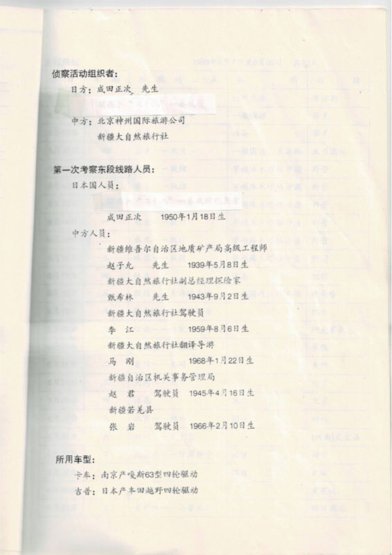
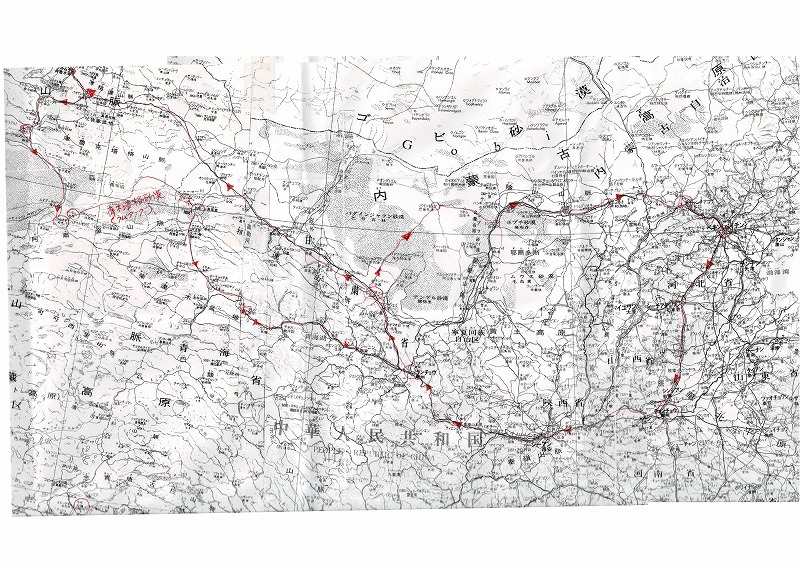

日中英合同探検計画書表紙 - 1993年国際探検の正式計画文書
77
日間
2
組（日中・中英）
1,070
km砂漠移動
60
日間砂漠移動
成田正次氏（1950年1月18日生まれ）は、1980年のPeng Jiamu博士失踪事件に深い関心を抱き、1993年に歴史的な日中英合同国際探検を計画・実行した。この探検は単なる冒険ではなく、失踪の謎を解明し、砂漠の真の姿を記録に残すという明確な使命を持った国際的な学術探検であった。

詳細な探検計画スケジュール

探検ルート地図
1993年探検の詳細計画
- 正式名称：中一英一九九三年穿越塔克拉玛干沙漠联合探险队
- 英語名称：JOINT BRITISH-CHINESE TAKLAMAKAN DESERT CROSSING EXPEDITION 1993
- 実施期間：1993年10月7日〜12月23日（77日間）
- 砂漠移動距離：約1,070km（60日間）
- 隊長：Charles Blackmore博士、趙子允氏
- 英国・中国：両国政府の正式承認
- 中国側協力：新疆大自然旅行社（総経理：王衛平）
- 探検家：趙希林氏、成田正次氏ほか
「この探検は観光や趣味ではない。Peng Jiamu博士への敬意と、砂漠の真実を後世に伝える使命感に基づく、真の国際探検活動である。」